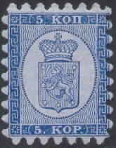
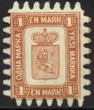
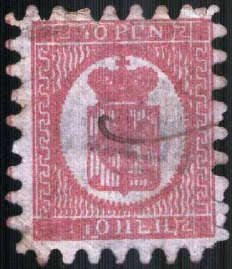
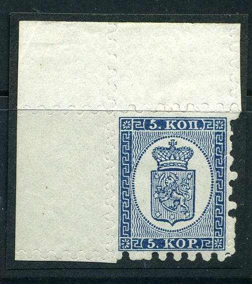
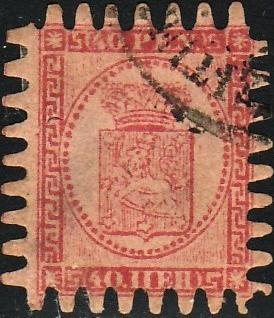
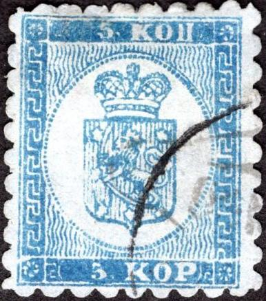
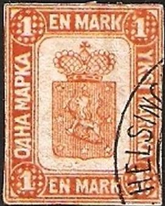
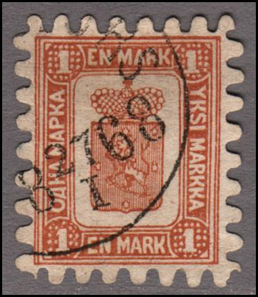
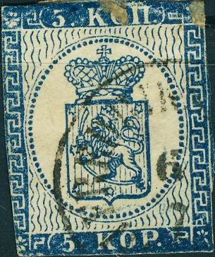

Return To Catalogue - Finland 1856 issue - 1875-1890 issues - 1891-1916 issues - 1917 onwards - Aunus - Carelia - Local issues for Helsingfors and Tammerfors - Miscellaneous - Railway and Ferry stamps
Note: on my website many of the
pictures can not be seen! They are of course present in the
catalogue;
contact me if you want to purchase the catalogue.
For issues of Finland of 1856 click here.
Value in 'KOP' (Kopecks, 1860)



5 Kopecks blue on blue 10 Kopecks red on red
Value in 'PEN' (1866)

5 Pen brown on grey 8 Pen black on green 10 Pen black on brown 20 Pen blue on blue 40 Pen red on red 1 Mark brown
Value of the stamps |
|||
vc = very common c = common * = not so common ** = uncommon |
*** = very uncommon R = rare RR = very rare RRR = extremely rare |
||
| Value | Unused | Used | Remarks |
| 5 k | R | *** | |
| 10 k | R | *** | |
| 5 p | R | *** | A misprint 5 p black exists: RRR |
| 8 p | R | *** | |
| 10 p | R | *** | A misprint 10 p brown exists: RRR |
| 20 p | *** | ** | |
| 40 p | *** | ** | |
| 1 M | RRR | RRR | |
| Reprints (exist of all values) | * to *** | - | |
The above stamps were printed on colored paper. This was to avoid people from cutting out impressions from postal stationery and reusing them again. Since these stationaries were printed on white paper, colored paper was used for the stamps. For more info see: http://posthorn.scc-online.org/volume_37-1.pdf. These stamps are not really perforated but cut, therefore most of these stamps are damaged:

Two stamps, note the typical perforation:

(Overinked 40 p stamp)


The two misprints: 5 p black and 10 p brown (inverted colours)
Postcards in the same design:

I have seen the values: 5 k blue (at least two types, differering in the bottom '5 KOP' part), 10 k red, 8 p green, 10 p lilac, 10 p brown, 20 p blue and 40 p red.
Besides 'normal' cancels, I have seen the kopeck values with a "ANK' in a rectangle cancel (for an example see the 1875 issue). I've also seen a cancel "FR.KO" in a rectangle with oblique corners.

"FR.KO" cancel



(I've been told that these are reprints)
Reprints were made in 1893 (or 1892?), I have no further information. Does anybody have any information about these reprints?

Forgery with the ornaments besides both '10.PEN' and '40 PEN' in
the wrong direction. I've seen the 40 p forgery cancelled with a
pattern of dots.

Some primitive forgeries, no perforation, reduced sizes. Next to
it the same 5 k forgery, but now perforated and cancelled.


Imperforate 10 k forgery and perforated 40 p forgery. Note the "FRANCO" cancel which I don't
think exists on genuine stamps. The same "FRANCO"
cancel can be found on forgeries of La Guaira and Rumania. See
also the next set of forgeries.


Perforated 40 p forgery with 'FRANCO' cancel (I've seen the same
forged cancel on stamps of Rumania and La Guaira). The cross on
the crown is very badly done. The lettering is also very bad.
Next to it two imperforate forgeries (5 p and 10 p) made by the
same forger. On http://www.fakebase.dk/showitem.asp?item=732 a
similar forgery of the 20 p (uncancelled and imperforate) can be
found. I've also seen the 20 p forgery with part of a concentric
circles cancel (similar to the one on the 5 p).
Note, that the ornament right to the star in the lower left corner is upside down in these forgeries.


Other forgery.

(Another primitive forgery)

Dubious 5 Kop item with the '5' placed too far to the right. Does
this stamp have a "ZEITUNGS"
cancel?

Very primitive forgery of the 10 k value in blue color and
imperforate. This forgery is identical to the image provided in
the John Edward Gray 'The Illustrated Catalogue of Postage
Stamps' of 1870 on page 49 (see image above). The same forgery
design can also be found in the catalogue of Placido
Ramon de Torres "Album Illustrado para Sellos de
Correo" of 1879 (information passed to me thanks to Gerhard
Lang, 2016) on page 60.

Two forgeries with 'printed' perforation, the 1 M has the wrong
colour: yellow. These are probably candywrappers with stamp
images printed on it. Next to it a 'Fazer candy-wrapper' of the 1
M value with a similar cancel as the second forgery (image found
at http://fakebase.dk).
Fournier has made forgeries of the 1 M stamp. He offers them in his 1914 pricelist as 1st choice forgeries for 2 Swiss Francs each. Most of them can be easily recognized by the forged cancel 'Helsingfors 27 I 1868' with diameter 28 mm. Also there is a small line hanging from the lowest pearl on the right hand side of the crown, according to the Serrane guide. Also, the cross on top of the crown is hollow (it is solid in the genuine stamps).



(Fournier forgeries)
(Fournier forged cancels, "HELSINGFORS 18 27 I 68" in a
single circel, "KUOPIO", "NYSLOTT" and
"WIBORG" with unreadable date, reduced size)

I presume this is a genuine stamp with a genuine
"NYSLOTT" cancel.
Other cancels exist on these Fournier forgeries, for example a "KUOPIO" cancel or a "NYSLOTT 21 5 1971" cancel (see images above).

Page from a Fournier Album.
Sperati has also made a forgery of the 1 M stamp. A picture of such a forgery can be found on http://www.seymourfamily.com/rfrajola/Sperati/speratiindex.htm:

Sperati forgery, first image obtained from the above mentioned
website.
Sperati used a genuine stamp of lower value, on which he printed the forged 1 M design. The cancels on this stamp (if present) are thus genuine. Due to the reproduction process (photo lithography), the thin vertical lines at the outer left and right border are smudged and joined at many places. In the lower left corner, a diagonal line connects the outer and inner frames.

(10 k cut from a postal stationery, the design is slightly
different from the stamps)

This stamp (cut?) has very wideline wavy lines in the background.
I've seen others with larger margins, they might be forgeries.
For issues of 1875 to 1890 click here.


{kind=link}
{kind=link}
{kind=link}
{kind=link}
{kind=link}
{kind=link}
{kind=link}
{kind=link}